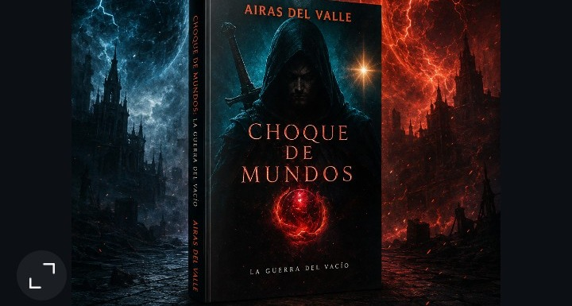
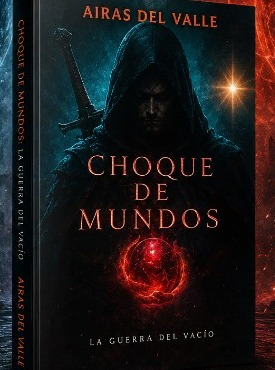

Saga Choque de Mundos · Libro I
La Guerra del Vacío ha comenzado. Kain, perseguido por las sombras de su pasado, intenta reconstruir su vida en la Ciudad Blanca, el último bastión de la humanidad. Años atrás, los grises —criaturas nacidas de la peor pesadilla— arrasaron la metrópolis. Ahora, algo aún más inquietante se agita entre los supervivientes: un plan oscuro que amenaza con romper lo poco que queda en pie.
Tras un brutal y calculado ataque, Kain se ve obligado a adentrarse en las profundidades prohibidas de Santiago de Compostela. A su lado, Alba, la temida Rompedora de Huesos, tan letal como enigmática. Su misión es clara... y desesperada: rescatar a Emma. Pero el Vacío ya ha empezado a tejer sus hilos.
¿Vale la pena seguir luchando... cuando todo parece perdido?
Kain
Al que en la Ciudad Blanca llaman El Asesino
Carga con un pasado oscuro, el mismo por el que los demás le juzgan.
Alba — Rompedora de Huesos
Superviviente con algo que demostrar
Joven y decidida a demostrar su valentía. Pero su pasado es mucho más grande de lo que ella misma piensa.
Emma
La fiel amiga y compañera de Kain
Seguiría a Kain a cualquier parte si él lo necesitase. Por desgracia, es ella quien necesitará ayuda.
Los grises
Criaturas del horror
Los supervivientes creen que son originarios de la Nebulosa y que desean acabar con la humanidad.
La Mano Negra
Lo que se dice en voz baja
Se dice que es quien está detrás del Día del Juicio Final, orquestando todo según su oscuro plan.
La Nebulosa
La barrera que nadie cruza dos veces
Una barrera compuesta por girones de nubes alrededor de la metrópolis. Nadie que haya entrado en ella ha regresado.
Choque de Mundos: La Guerra del Vacío disponible
El punto de partida: la caída de la metrópolis, la Ciudad Blanca, y el descenso a las profundidades de Santiago de Compostela.
Project: Ashes of the Fallen
Lo que queda cuando el Vacío ha terminado de tejer sus hilos.
Project Empty
El puente entre lo que ya ha caído y lo que todavía está por llegar.
El Despertar de Primavera
El cierre del ciclo que empezó bajo Santiago de Compostela.

Choque de Mundos: La Guerra del Vacío
Ya disponible en Amazon, en tapa dura y tapa blanda.
Consíguelo en Amazon